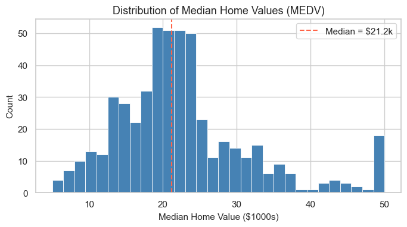
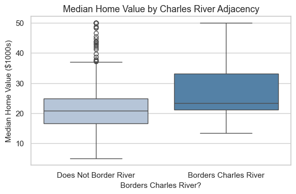
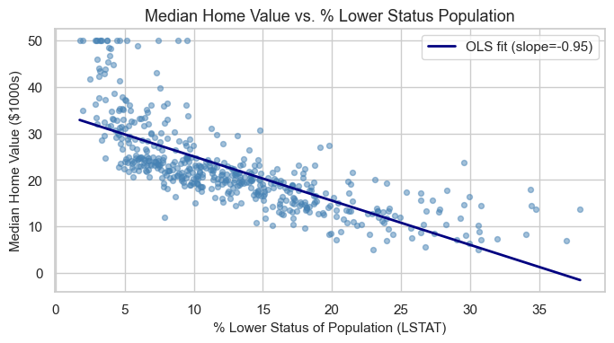
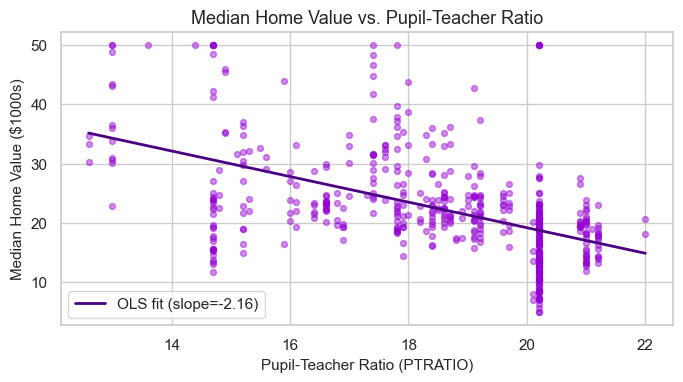
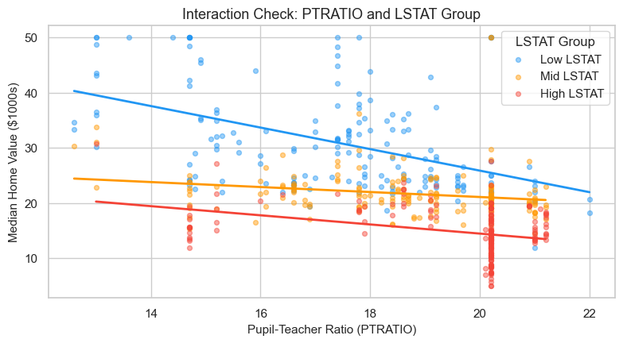
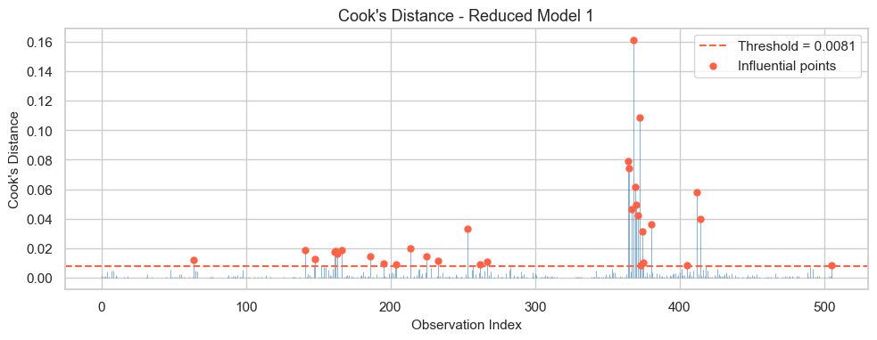
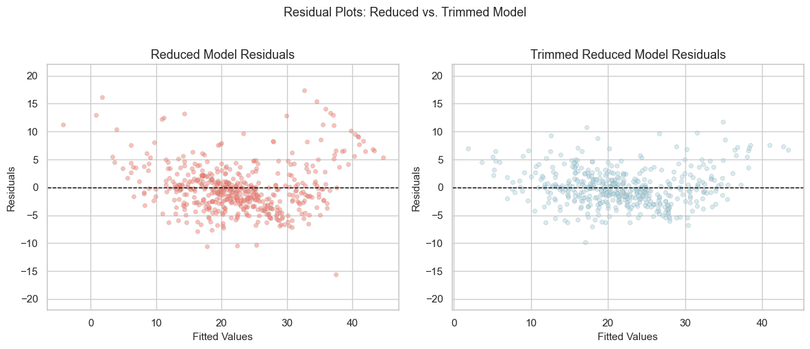

| Variable | Description |
|---|---|
| MEDV | Median value of owner-occupied homes (in $1000s) |
| CRIM | Per capita crime rate by town |
| ZN | Proportion of residential land zoned for lots over 25,000 sqft |
| INDUS | Proportion of non-retail business acres per town |
| CHAS | Borders Charles River (1=yes) |
| NOX | Nitric oxide concentration (parts per 10 million) |
| RM | Average number of rooms per dwelling |
| AGE | Proportion of owner-occupied units built prior to 1940 |
| DIS | Weighted distances to five Boston employment centers |
| RAD | Index of accessibility to radial highways |
| TAX | Full-value property-tax rate per $10,000 |
| PTRATIO | Pupil-teacher ratio by town |
| B | 1000(Bk - 0.63)^2 where Bk is the proportion of Black residents |
| LSTAT | % lower status population |
title: “Report” author: “Jennifer Lee, Ashley Park, Kevan Wang, Oliver Lublin” format: pdf —
Introduction and Data
Housing prices reflect a complex interplay of structural, environmental, and social factors. Understanding which neighborhood attributes are most closely tied to price is essential for urban planners, policymakers, and social scientists who care about affordability and inequality.
In this report we analyze the classic Boston Housing dataset, originally published in Harrison and Rubinfeld (1978) using data from the U.S. Census Bureau. Our primary research question is:
How effectively can we predict median owner-occupied home values in Boston census tracts using 13 neighborhood-level predictors, and which of these predictors are most influential?
The response variable, MEDV, records median home value in $1000s for each tract. The 13 predictors capture a range of neighborhood features, including crime rates, air quality, accessibility, school characteristics, housing stock, and socioeconomic status. Table below summarizes all variables used in our analysis.
Exploratory Data Analysis
We begin by examining the marginal distribution of the response variable, median home value (MEDV). The histogram shows a right-skewed distribution with a median around $20,000 and a long upper tail. There is also a visible spike at the maximum recorded value of $50,000. This reflects a censoring artifact: in the original census instrument, the highest response category for home value was “$50,000 or more.” These censored tracts represent genuinely high-value neighborhoods but do not provide exact prices.
Among predictors, nitric oxide concentration (NOX) is roughly uniform over the range 0.4–0.9 parts per 10 million, indicating substantial variation in air quality across tracts. The weighted distance to five Boston employment centers (DIS) is heavily concentrated between 2.5 and 7.5 miles, with relatively fewer neighborhoods that are very close to or very far from major job hubs. Together, these univariate patterns suggest meaningful heterogeneity in both environmental and locational features that may help explain variation in housing values.

To understand how individual predictors relate to home values, we next examine several key bivariate patterns.
First, we compare MEDV across tracts that border the Charles River (CHAS = 1) versus those that do not. The 25th percentile of home values in river-adjacent tracts exceeds the median home value of non-adjacent tracts, and the overall distribution is shifted upward. This suggests a sizable location premium for waterfront or near-waterfront neighborhoods.

Second, socioeconomic status plays a central role. The figure below shows a strong, nearly linear negative association between the percentage of lower-status residents (LSTAT) and home values. Tracts with very low LSTAT tend to have some of the highest home prices in the dataset, whereas neighborhoods with high LSTAT almost never exhibit high MEDV. This pattern suggests that socioeconomic composition may be one of the most influential determinants of housing demand in Boston.

Third, school quality, as proxied by pupil–teacher ratio (PTRATIO), also exhibits a clear relationship with housing prices. Neighborhoods with lower PTRATIO tend to have substantially higher home values. This is consistent with the idea that education-related public goods are capitalized into housing markets, with families willing to pay larger premiums for access to better-resourced schools.

Motivated by the bivariate patterns, we also explored an interaction between PTRATIO and LSTAT. The interaction plot suggests that the penalty for high PTRATIO is steepest in more advantaged neighborhoods (low LSTAT), while in highly disadvantaged tracts, home values are low regardless of PTRATIO. This motivates formally testing the PTRATIO × LSTAT interaction in our regression model.

Methodology
Our primary modeling tool is multiple linear regression, with median home value (MEDV) as the response and the 13 remaining variables as predictors. A linear model offers two advantages: (1) it provides interpretable coefficients that quantify the marginal effect of each predictor on home values, and (2) our exploratory analyses revealed predominantly linear or smoothly monotone relationships between MEDV and key predictors.
We first fit a baseline model including all 13 predictors:
\(\text{MEDV}_i = \beta_0 + \beta_1 \text{CRIM}_i + \cdots + \beta_{13} \text{LSTAT}_i + \varepsilon_i.\)
model_base <- lm(MEDV ~ ., data = boston)To assess potential multicollinearity, we computed variance inflation factors (VIFs) for each predictor. All VIF values were well below the conventional threshold of 10, indicating no severe multicollinearity and supporting the use of the full predictor set in the initial model.
vif_values <- car::vif(model_base)
kable(as.data.frame(vif_values), col.names = c("VIF"), caption = "Variance Inflation Factors for Baseline Model")| VIF | |
|---|---|
| CRIM | 1.791926 |
| ZN | 2.299062 |
| INDUS | 4.004044 |
| CHAS | 1.074054 |
| NOX | 4.396809 |
| RM | 1.934734 |
| AGE | 3.102346 |
| DIS | 3.956588 |
| RAD | 7.491429 |
| TAX | 9.031525 |
| PTRATIO | 1.793913 |
| B | 1.348006 |
| LSTAT | 2.940409 |
Next, we considered theoretical interaction effects suggested by our EDA. In particular, the relationship between PTRATIO and LSTAT. We therefore fit an expanded model that included the interaction term PTRATIO × LSTAT in addition to all main effects.
model_interaction <- lm(MEDV ~ . + PTRATIO * LSTAT, data = boston)To further evaluate and compare the baseline and interaction models, we assessed AIC values and overall model accuracy metrics.
# A tibble: 1 × 4
r.squared adj.r.squared sigma AIC
<dbl> <dbl> <dbl> <dbl>
1 0.741 0.735 4.74 3021.# A tibble: 1 × 4
r.squared adj.r.squared sigma AIC
<dbl> <dbl> <dbl> <dbl>
1 0.743 0.735 4.74 3021.Both the baseline model and the interaction model displayed very similar levels of accuracy, with nearly identical adjusted \(R^2\), residual standard error (\(\sigma\)), and AIC values, which suggests that the relationship between PTRATIO and home value is not strongly moderated by LSTAT after conditioning on the other 12 predictors. Hence, we treated the interaction model as an exploratory extension rather than a definitive improvement.
Next, we attempted ridge regression to evaluate whether regularizing the coefficients might improve predictive performance. However, the ridge model offered no meaningful improvement over OLS, so it was excluded from the final analysis.
We then conducted influence diagnostics using Cook’s Distance to assess whether specific tracts had disproportionate influence on the model. A standard threshold of
\[ D_i \;>\; \frac{4}{\,n - k - 1\,} \]
identified several outliers, particularly high-value census tracts affected by the MEDV = 50 censoring. These influential points were causing substantial distortion in multiple coefficients and inflating prediction error for the central region of the distribution.

After identifying exceedingly influential observations, we constructed a refined model by removing only the tracts whose Cook’s Distance exceeded the threshold. This refinement excluded censored high-value tracts while retaining the vast majority of the dataset. The refined model showed substantial improvement in model accuracy, including lower residual standard error, higher adjusted \(R^2\) (from 0.73 for 0.84), and improved linearity in residual plots.
# A tibble: 1 × 12
r.squared adj.r.squared sigma statistic p.value df logLik AIC BIC
<dbl> <dbl> <dbl> <dbl> <dbl> <dbl> <dbl> <dbl> <dbl>
1 0.841 0.837 3.26 187. 2.96e-174 13 -1226. 2482. 2545.
# ℹ 3 more variables: deviance <dbl>, df.residual <int>, nobs <int>
Because this refined model exhibited meaningfully betterdiagnostics than both the baseline and interaction models, we selected it as the basis for our final interpretation in the Results section. The refined model preserves the interpretability of the full linear specification but avoids distortion caused by extreme outliers.
Results
Using the refined OLS model obtained through Cook’s Distance–based removal, we now assess the statistical significance and predictive contribution of each variable. Table below reports the complete regression output, including coefficients, standard errors, test statistics, and p-values.
| term | estimate | std.error | statistic | p.value |
|---|---|---|---|---|
| (Intercept) | 20.080 | 4.034 | 4.978 | 0.000 |
| CRIM | -0.087 | 0.028 | -3.099 | 0.002 |
| ZN | 0.043 | 0.010 | 4.435 | 0.000 |
| INDUS | -0.024 | 0.044 | -0.547 | 0.584 |
| CHAS | 1.376 | 0.654 | 2.103 | 0.036 |
| NOX | -10.259 | 2.778 | -3.693 | 0.000 |
| RM | 5.008 | 0.367 | 13.658 | 0.000 |
| AGE | -0.023 | 0.010 | -2.371 | 0.018 |
| DIS | -1.235 | 0.146 | -8.476 | 0.000 |
| RAD | 0.200 | 0.047 | 4.220 | 0.000 |
| TAX | -0.012 | 0.003 | -4.621 | 0.000 |
| PTRATIO | -0.747 | 0.094 | -7.979 | 0.000 |
| B | 0.011 | 0.002 | 5.500 | 0.000 |
| LSTAT | -0.373 | 0.043 | -8.762 | 0.000 |
This provides a clear insight to answering our research question.
First, several predictors emerge as especially powerful and statistically robust determinants of housing prices: socioeconomic status (LSTAT), housing structure (RM), school quality (PTRATIO), environmental quality (NOX), accessibility (DIS, RAD), property tax burden (TAX), and racial composition (B) all exhibit extremely strong significance (p < 0.001). Their consistently large effect sizes and very low p-values show that these dimensions of neighborhood quality are central to predicting home values.
Second, additional predictors remain important at conventional levels, including crime rate (CRIM), river adjacency (CHAS), and housing stock age (AGE), each of which independently explains meaningful variation in prices even after adjusting for the stronger predictors. Only INDUS shows no significant predictive value once other neighborhood characteristics are included.
Furthermore, a few coefficients from the refined model provide especially intuitive interpretations that connect directly back to our research question:
From the regression coefficient of
CHAS, we expect that a house located in a tract bordering the Charles River will be about $1,400 more expensive than a comparable house not located on the river, holding all other variables constant. This supports our earlier descriptive finding that river-adjacent neighborhoods command a clear location premium.From the regression coefficient of
RM, we expect that for each additional room a home has, the median home value increases by roughly $5,000, all else equal. This highlights the importance of structural housing quality and size in explaining price differences across tracts.From the regression coefficient of
DIS, for every one-unit increase in the weighted distance to the five main Boston employment centers, we expect the median home value to decrease by about $1,200, holding other predictors fixed. This suggests that, after accounting for other neighborhood features, longer effective commute distances still modestly depress housing values.
Discussions + Conclusions
Predicted Housing Value Under Median Neighborhood Conditions
To illustrate the implied housing price for a tract with “average” characteristics, we predicted MEDV using the vector of median values for all predictors in the dataset. This provides a model-based estimate of what the typical Boston census tract would have been valued at.
fit lwr upr
1 21.84184 15.42128 28.2624Our refined model projects a median-condition Boston tract home value of approximately $21,841. To contextualize this estimate, Demographia’s data about housing prices across the nation in 1971 reports that the national median is $18,100, and most major cities’ median fall within our estimated confidence interval. The same data suggests that the median housing price in Boston in 1971 is $23,400. Thus, our model plausibly estimates the housing prices around similarly urbanized/conditioned cities around similar time horizon.
Synthesizing Key Drivers of Housing Prices
Patterns observed in our exploratory analysis proved essential for interpreting the refined model. The strong decline of MEDV with rising LSTAT, the positive association with RM, and the negative slope with PTRATIO foreshadowed their emergence as the most influential predictors. Environmental and geographic factors—including higher prices in river-adjacent tracts and lower prices in high-NOX areas—also reappeared in the refined regression, reinforcing the role of neighborhood amenities and environmental quality in shaping housing demand.
Although the PTRATIO × LSTAT interaction did not improve predictive accuracy, exploring it revealed a meaningful conceptual point: in socioeconomically disadvantaged neighborhoods, improvements in school quality or environmental conditions have less marginal impact on price because baseline conditions are already strongly suppressing values.
Reflection on Modeling Choices
Both the baseline and interaction models achieved similar adjusted (R^2) and AIC values, and ridge regression offered no gains in accuracy—consistent with our finding that multicollinearity was minimal. The major improvement came from addressing influential observations. Cook’s Distance identified several censored high-value tracts that distorted coefficient estimates and inflated residual variance. Removing these outliers produced a refined model with higher accuracy, more stable effects, and diagnostic patterns much closer to linear-model assumptions.
Broader Housing-Market Implications
The refined regression aligns with broader urban economics: socioeconomic status, structural housing quality, school resources, environmental conditions, and accessibility are all central to pricing. The strong effects of PTRATIO and NOX underscore how educational and environmental public goods were capitalized into housing values even in the 1970s.
Our predicted value for a tract with median characteristics (~$21,841) closely matches typical national and Boston-area home prices from the early 1970s, indicating that the model yields historically realistic price levels and captures core neighborhood-level drivers of housing values.
Limitations and Future Directions
Key limitations include censoring of MEDV at $50,000, the cross-sectional nature of the data, and the absence of modern predictors such as crime rates, school performance, or transit access. Future work could apply censored regression models, incorporate spatial dependence, or compare these historical determinants with modern data to assess how Boston’s housing dynamics have evolved.